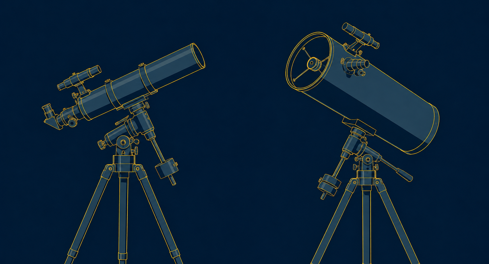
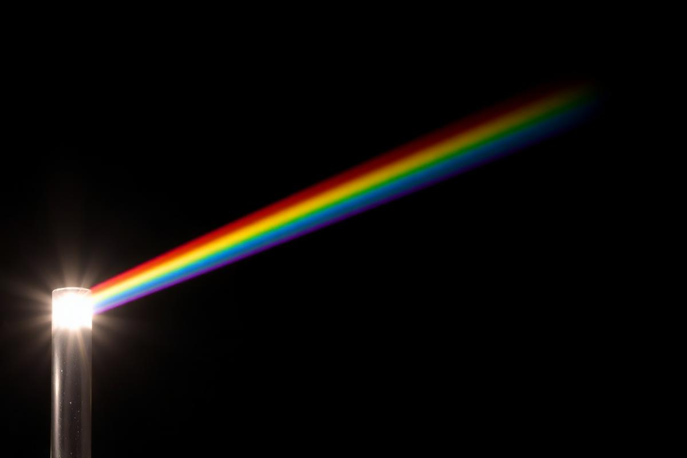
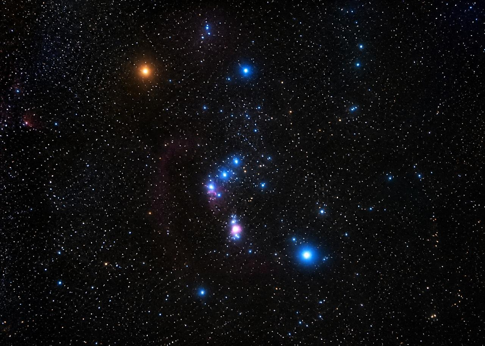
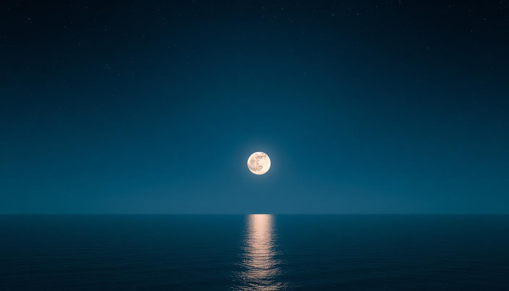
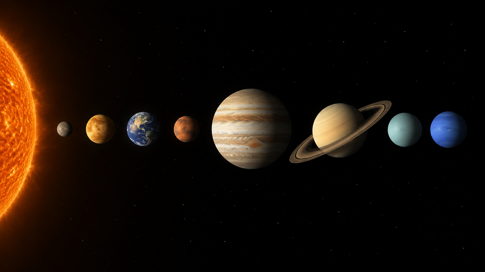
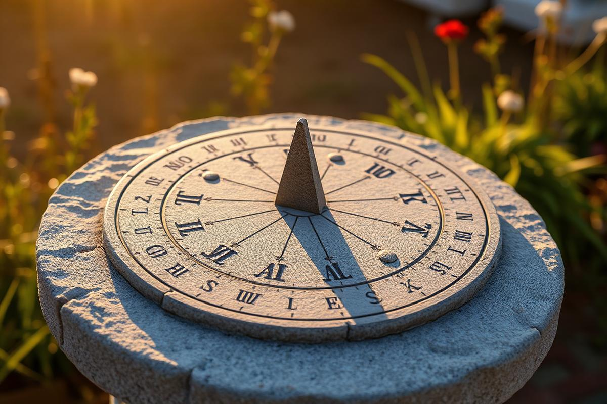

Um passeio pelos céus criados por Deus: constelações, planetas, luz, marés e o testemunho das estrelas — com todas as respostas da especialidade.
A especialidade avançada exige a conclusão da especialidade de Astronomia (nível básico). Todo o conteúdo daquele requisito — o Sol, a Lua, as fases lunares, os eclipses, a Via Láctea, a observação do céu e a mensagem bíblica da criação — está reunido neste artigo de apoio:
Consulte o material completo em:
Especialidade de Astronomia
Estudamos o céu não como fruto do acaso, mas como projeto. No quarto dia da semana da criação, Deus disse: “Haja luminares no firmamento dos céus, para fazerem separação entre o dia e a noite; sejam eles para sinais, para estações, para dias e anos” (Gênesis 1:14). Cada movimento regular que a astronomia descreve com precisão matemática é a assinatura de um Criador ordenado, e não de um caos inicial.
O movimento diário das estrelas é aparente: quem se move somos nós. A Terra gira em torno do próprio eixo, de oeste para leste, completando uma volta em cerca de 23h 56min 4s (o dia sideral). Como estamos sobre esse “carrossel”, vemos todo o céu girar no sentido contrário — de leste para oeste — a aproximadamente 15° por hora.
Por isso as estrelas nascem no horizonte leste, sobem, cruzam o meridiano (trânsito) e se põem a oeste. Perto dos polos celestes as estrelas nunca se põem: são as circumpolares, que descrevem círculos em torno do polo. No hemisfério sul, elas giram no sentido horário ao redor do polo sul celeste.
Existe também um segundo movimento, muito mais lento: a translação da Terra ao redor do Sol, que faz o céu “adiantar” cerca de 4 minutos por dia (2 horas por mês). É por isso que as constelações mudam com as estações do ano.
A palavra hebraica traduzida como “esticar os céus” aparece mais de uma dezena de vezes na Bíblia (Isaías 40:22; Jó 9:8). Muito antes de qualquer telescópio, a Escritura já descrevia um céu vasto e ordenado, sustentado por Aquele que “a todas chama pelo nome” (Isaías 40:26).
Corpo esférico que orbita uma estrela, não produz luz própria (brilha por reflexão) e limpou a vizinhança de sua órbita. Vistos da Terra, “vagueiam” entre as estrelas — daí o nome grego planetes, “errante”.
Corpo que gira ao redor de um planeta. A Lua é o satélite natural da Terra; Júpiter tem dezenas. Satélites artificiais são os construídos pelo homem.
Corpo de gelo, poeira e rocha em órbita muito alongada. Ao se aproximar do Sol, forma a coma e a cauda, sempre apontada para longe do Sol pelo vento solar.
O rastro luminoso produzido quando um meteoroide entra na atmosfera e se aquece por atrito (a “estrela cadente”). Se chega ao solo, o fragmento passa a se chamar meteorito.
Vasta nuvem de gás e poeira no espaço. Pode brilhar por emissão (como a Nebulosa de Órion), refletir a luz de estrelas próximas, ou aparecer escura recortando o fundo estrelado (Saco de Carvão).
Nome antigo para as estrelas propriamente ditas: sóis tão distantes que sua posição relativa parece imutável ao longo da vida humana, em contraste com os planetas errantes. Na prática todas têm movimento próprio, apenas imperceptível a olho nu.
Região mais fria e escura da fotosfera solar (cerca de 3.800 K contra 5.800 K ao redor), causada por campos magnéticos intensos. Seguem um ciclo de cerca de 11 anos.
Manchas solares só devem ser observadas por projeção ou com filtro solar certificado. Olhar o Sol por telescópio ou binóculo sem filtro apropriado causa cegueira permanente em segundos.
Para localizar qualquer astro, os astrônomos imaginam uma esfera gigantesca envolvendo a Terra, na qual todos os corpos parecem estar fixados. Sobre ela se projetam as mesmas linhas de referência do globo terrestre.
| Termo | Significado |
|---|---|
| Esfera celeste | Esfera imaginária de raio infinito, centrada na Terra, onde se projetam todos os astros. |
| Polo celeste | Ponto onde o prolongamento do eixo de rotação da Terra encontra a esfera celeste. O norte fica perto de Polaris; o sul, próximo à fraca Sigma Octantis, apontada pelo Cruzeiro do Sul. |
| Equador celeste | Projeção do equador terrestre no céu; divide a esfera em hemisférios norte e sul celestes. |
| Horizonte | Círculo que separa a parte visível do céu da parte oculta pela Terra, para um observador em determinado lugar. |
| Ascensão reta (AR) | A “longitude” celeste, medida em horas, minutos e segundos (0h a 24h), para leste a partir do ponto vernal. |
| Declinação (Dec) | A “latitude” celeste, medida em graus de 0° no equador celeste até +90° (polo norte) e −90° (polo sul). |
| Trânsito | Passagem de um astro pelo meridiano local — o instante em que atinge sua maior altura. Também designa a passagem de Mercúrio ou Vênus diante do disco solar. |
| Conjunção | Aproximação aparente de dois astros na esfera celeste (mesma ascensão reta), como “Júpiter em conjunção com a Lua”. |
| Eclíptica | Círculo descrito pelo Sol na esfera celeste ao longo do ano; é o plano da órbita da Terra, inclinado 23,5° em relação ao equador celeste. Nele se alinham as constelações zodiacais. |
As coordenadas só funcionam porque o universo é previsível. Podemos calcular onde estará Saturno daqui a mil anos. Essa regularidade é exatamente o que a Bíblia chama de “as ordenanças dos céus” (Jó 38:33) — leis fixas estabelecidas por um Legislador.

A montagem equatorial possui dois eixos perpendiculares: o eixo polar (de ascensão reta) e o eixo de declinação. O truque é que o eixo polar fica paralelo ao eixo de rotação da Terra — assim, um único movimento acompanha o giro do céu.
Numa montagem altazimutal são necessários dois movimentos simultâneos para seguir uma estrela, e o campo “gira” — o que arruína fotografias longas. A equatorial resolve isso com um só eixo, sendo por isso a preferida na astrofotografia.
Ao atravessar um prisma, a luz branca do Sol se decompõe em um espectro contínuo de sete cores principais: vermelho, alaranjado, amarelo, verde, azul, anil (índigo) e violeta. Isso acontece porque cada comprimento de onda é desviado (refratado) num ângulo diferente — o vermelho menos, o violeta mais. O mesmo fenômeno, nas gotas de chuva, produz o arco-íris.
A cor de uma estrela revela sua temperatura superficial. Corpos aquecidos emitem mais luz nos comprimentos curtos à medida que esquentam: um ferro em brasa passa do vermelho ao alaranjado, ao amarelo e ao branco-azulado. Com as estrelas é igual — azul é quente, vermelho é frio (o inverso da intuição das torneiras!).

| Classe | Cor | Temperatura | Exemplo |
|---|---|---|---|
| O | Azul | acima de 30.000 K | Mintaka (δ Orionis) |
| B | Azul-branca | 10.000–30.000 K | Rigel, Spica, Acrux |
| A | Branca | 7.500–10.000 K | Sirius, Vega, Altair |
| F | Branco-amarelada | 6.000–7.500 K | Canopus, Procyon |
| G | Amarela | 5.200–6.000 K | O Sol, Alfa Centauri A |
| K | Alaranjada | 3.700–5.200 K | Arcturo, Aldebarã |
| M | Vermelha | abaixo de 3.700 K | Betelgeuse, Antares |
A sequência clássica é memorizada como O B A F G K M. Além da cor, o espectro mostra linhas escuras (linhas de absorção) que funcionam como impressões digitais dos elementos químicos presentes na estrela.
“Ele conta o número das estrelas, chamando-as todas pelos seus nomes” (Salmo 147:4). E o apóstolo Paulo já reconhecia o que a espectroscopia confirmaria séculos depois: “uma estrela difere em glória de outra estrela” (1 Coríntios 15:41). Diversidade, e não uniformidade, é a marca da criação.
A eclíptica (caminho aparente do Sol) e o equador celeste são dois grandes círculos inclinados 23,5° um em relação ao outro. Como todo par de círculos máximos, eles se cruzam em dois pontos opostos: são exatamente os equinócios.
O Sol cruza o equador celeste indo do sul para o norte. É o equinócio vernal (de primavera) no hemisfério norte e o equinócio de outono no hemisfério sul. Esse ponto (γ, em Peixes) é a origem da ascensão reta.
O Sol cruza o equador celeste do norte para o sul. É o equinócio outonal no hemisfério norte e o de primavera no hemisfério sul — a nossa primavera brasileira.
Nos equinócios o dia e a noite têm praticamente a mesma duração em todo o planeta (a palavra vem do latim aequus + nox, “noite igual”), e o Sol nasce exatamente no ponto leste e se põe no ponto oeste. Nos pontos mais afastados da eclíptica em relação ao equador celeste ocorrem os solstícios (por volta de 21 de junho e 21 de dezembro), que marcam o dia mais curto e o mais longo do ano.
Por causa da precessão dos equinócios, o ponto vernal se desloca cerca de 50 segundos de arco por ano e hoje já não está mais em Áries, mas em Peixes — embora ainda seja chamado de “primeiro ponto de Áries”.
Surgindo a leste nas noites de primavera do hemisfério sul, Órion domina o céu do verão. Seu “cinturão” de três estrelas alinhadas é o marco mais reconhecível de todo o firmamento — no Brasil, as Três Marias.
Para apontar: procure a leste, após o anoitecer de novembro/dezembro, as três estrelas iguais e enfileiradas; acima delas está a avermelhada Betelgeuse e abaixo a azul Rigel.
No outono austral o Cruzeiro do Sul atinge sua posição mais alta, quase vertical, servindo de bússola: prolongando 4,5 vezes o braço maior encontra-se o polo sul celeste. Ao seu lado brilham Alfa e Beta Centauri, “as guardiãs”.
Também surge o majestoso Escorpião, com a avermelhada Antares no coração — indicando que o inverno se aproxima.
Perto do polo sul celeste existem constelações circumpolares: elas nunca se põem e podem ser acompanhadas do anoitecer ao amanhecer durante o ano inteiro (tanto melhor quanto mais ao sul o observador estiver).
Nelas ficam também a Grande e a Pequena Nuvem de Magalhães e o brilhante aglomerado 47 Tucanae — tesouros exclusivos do céu do sul.
Bônus: Cão Menor, Cocheiro (Auriga) e Eridano.
Bônus: Balança (Libra), Águia (Aquila) e Cisne, ao norte.

Órion é melhor observada no verão do hemisfério sul — de dezembro a março, atingindo o auge em janeiro e fevereiro, quando cruza o meridiano por volta das 21h–22h, bem alto no céu. (No hemisfério norte, corresponde ao inverno.) De maio a agosto ela some no brilho do Sol.
Supergigante vermelha no ombro nordeste do caçador — canto superior esquerdo da figura vista do sul. Tão grande que, no lugar do Sol, engoliria a órbita de Marte.
Supergigante azul-branca no pé oposto, no canto inferior direito. É a mais brilhante da constelação, com cerca de 120.000 vezes a luminosidade do Sol.
A “Guerreira”, no outro ombro, ao lado de Betelgeuse — a terceira mais brilhante da constelação.
Procure primeiro as Três Marias — Alnitak, Alnilam e Mintaka —, três estrelas de brilho semelhante e perfeitamente alinhadas. Elas ficam entre Betelgeuse (de um lado, avermelhada) e Rigel (do outro, azulada). Prolongando o cinturão para um lado chega-se a Sirius; para o outro, a Aldebarã e às Plêiades. Pendurada abaixo do cinturão está a “espada”, cujo brilho difuso central é a Nebulosa de Órion (M42), um berçário de estrelas visível até com binóculos.
As Três Marias apenas parecem vizinhas: Mintaka está a cerca de 1.200 anos-luz, Alnilam a cerca de 2.000. O alinhamento perfeito é um efeito de perspectiva — e mesmo assim, que perspectiva!
Em 1603, o astrônomo alemão Johann Bayer criou o sistema usado até hoje: dentro de cada constelação, as estrelas recebem uma letra grega em ordem (aproximada) de brilho — a mais brilhante é α (alfa), a seguinte β (beta), depois γ (gama), δ (delta) e assim por diante. A letra é acompanhada do nome da constelação no caso genitivo latino ("de tal constelação"). Esgotadas as 24 letras gregas, passa-se às letras latinas e a números.
| Designação | Leitura | Nome próprio | Observação |
|---|---|---|---|
| α Canis Majoris | Alfa do Cão Maior | Sirius | A estrela mais brilhante de todo o céu noturno |
| α Centauri | Alfa do Centauro | Rigil Kentaurus | Sistema estelar mais próximo do Sol |
| α Crucis | Alfa do Cruzeiro | Acrux | A estrela do pé do Cruzeiro do Sul |
| β Orionis | Beta de Órion | Rigel | Exceção famosa: é mais brilhante que α (Betelgeuse) |
| α Scorpii | Alfa do Escorpião | Antares | “Rival de Marte”, pela cor avermelhada |
| α Lyrae | Alfa da Lira | Vega | Foi estrela polar do norte há 12.000 anos |
Alfabeto grego em ordem: α β γ δ ε ζ η θ ι κ λ μ ν ξ ο π ρ σ τ υ φ χ ψ ω.
Magnitude aparente mede o brilho de um astro visto da Terra: quanto menor o número, mais brilhante. Estrelas de “primeira magnitude” são as de magnitude aproximadamente 1,5 ou mais brilhantes. A olho nu, em céu escuro, enxergamos até a magnitude 6. Abaixo, as principais, com a época em que são mais bem observadas no Brasil.
| Estrela | Constelação | Mag. | Melhor época (Brasil) |
|---|---|---|---|
| Sirius | Cão Maior | −1,46 | Verão (jan–mar) |
| Canopus | Carina | −0,74 | Verão (jan–fev) |
| Alfa Centauri (Rigil Kent.) | Centauro | −0,27 | Outono/inverno (abr–jul) |
| Arcturo | Boieiro | −0,05 | Outono (maio–jun), ao norte |
| Vega | Lira | 0,03 | Inverno (jul–ago), baixa ao norte |
| Rigel | Órion | 0,13 | Verão (jan–fev) |
| Procyon | Cão Menor | 0,34 | Verão (fev–mar) |
| Achernar | Eridano | 0,46 | Primavera/verão (nov–dez) |
| Betelgeuse | Órion | ~0,50 (variável) | Verão (jan–fev) |
| Hadar (Beta Centauri) | Centauro | 0,61 | Outono/inverno (maio–jul) |
| Altair | Águia | 0,76 | Inverno (ago–set) |
| Acrux | Cruzeiro do Sul | 0,77 | Outono (abr–jun) |
| Aldebarã | Touro | 0,86 | Verão (dez–jan) |
| Antares | Escorpião | 0,96 | Inverno (jun–jul) |
| Spica | Virgem | 0,97 | Outono (abr–maio) |
Outras candidatas do grupo, dependendo do critério: Pollux, Fomalhaut, Deneb, Mimosa (β Crucis) e Regulus.
Faça um “diário do céu”: a cada mês, anote a data, o horário e a direção em que localizou cada estrela de primeira magnitude. Ao completar um ano, você terá cumprido o requisito e ganhado um mapa mental do firmamento inteiro.

Desenhe a Terra como um círculo, com a Lua à direita. Agora acrescente uma camada de água ligeiramente alongada em dois bojos opostos: um voltado para a Lua e outro exatamente do lado contrário. É o elipsoide de maré.
Como a Terra gira sob esses bojos, cada lugar passa por duas marés altas e duas baixas a cada 24h50min. O atraso diário de 50 minutos ocorre porque a Lua também avançou em sua órbita.
Sizígia (marés de água viva): na Lua nova e na cheia, Sol, Terra e Lua se alinham e as forças se somam — marés altíssimas e baixíssimas.
Quadratura (marés de água morta): nos quartos crescente e minguante, o Sol forma 90° com a Lua e as forças se enfraquecem mutuamente — variação mínima.
As marés oxigenam estuários, distribuem nutrientes e limpam o litoral. Uma Lua muito maior produziria marés destrutivas; uma muito menor, oceanos estagnados. O tamanho, a distância e a massa da Lua estão exatamente onde precisam estar — Deus “fez a lua para marcar as estações” (Salmo 104:19).

A olho nu vemos cinco planetas: Mercúrio, Vênus, Marte, Júpiter e Saturno — conhecidos desde a Antiguidade. Já Urano (magnitude ~5,7, visível apenas como pontinho em céu perfeito e para olhos treinados) e Netuno (magnitude ~7,8, invisível a olho nu) exigem binóculo ou telescópio. Plutão, hoje classificado como planeta anão, requer telescópio de grande porte.
Mercúrio e Vênus. Por serem planetas interiores (orbitam entre a Terra e o Sol), nunca se afastam muito do Sol no céu; por isso só aparecem pouco antes do nascer do Sol ou logo após o pôr do sol, nunca no meio da noite. Vênus, extremamente brilhante, é chamado de Estrela d'Alva (matutina) ou Vésper / Estrela Vespertina.
A expressão “estrela da manhã” aparece em Apocalipse 22:16, onde Jesus se identifica como “a brilhante Estrela da manhã” — aquela que anuncia a chegada de um novo dia.

O relógio de sol marca a hora solar verdadeira, que difere da hora oficial por três motivos:
Ao meio-dia solar, a sombra do gnômon é a mais curta do dia e aponta exatamente na direção norte–sul.
Em 2 Reis 20:9-11 e Isaías 38:8, o sinal dado ao rei Ezequias envolveu a sombra que retrocedeu dez graus nos “degraus de Acaz” — provavelmente uma escada usada como relógio solar.
Três nomes de estrelas e aglomerados aparecem explicitamente no Antigo Testamento — sempre em contextos que exaltam o poder criador de Deus, não em contexto astrológico. Nas versões em português, os nomes variam conforme a tradução (Almeida, NVI, ARA).
“Ele é o que fez a Ursa, o Órion, e o Sete-estrelo, e as recâmaras do sul.” Jó reconhece Deus como o autor das constelações — Ele as fez.
“Poderás tu atar as cadeias do Sete-estrelo (Plêiades) ou soltar os laços do Órion? Ou fazer sair as constelações a seu tempo...?” Deus mostra que o controle do cosmos pertence apenas a Ele.
“Procurai o que faz o Sete-estrelo e o Órion, e torna a densa treva em manhã...” O profeta usa a criação para convidar Israel a buscar o Criador.
Nas traduções mais antigas (como a King James e algumas edições de Almeida), Arcturo aparece em Jó 9:9 e Jó 38:32 (“guiarás a Arcturo com seus filhos?”). O termo hebraico é ‘Ayish ou ‘Ash, que a maioria dos estudiosos hoje identifica com a Ursa Maior (a “Carroça”), cujas estrelas seriam “os filhos”. Curiosamente, é justamente a curva da cauda da Ursa Maior que aponta para a estrela Arcturo, no Boieiro — daí a antiga associação.
Também merecem nota Isaías 40:26 (“Levantai ao alto os vossos olhos e vede: quem criou estas coisas?”), Salmo 8:3-4, Salmo 147:4 e Gênesis 1:14-16, que fundamentam a visão criacionista do universo.
Em Primeiros Escritos, Ellen G. White relata: “O Senhor deu-me uma visão de outros mundos... Contemplei então uma abertura em Órion, donde vinha a voz de Deus. Por essa abertura descerá a Nova Jerusalém.” (Primeiros Escritos, p. 41)
A astronomia mede distâncias que a mente não consegue abarcar, e ainda assim encontra leis simples e constantes governando tudo. Ordem não nasce do acaso — nasce de um Projetista. Estudar as estrelas, para o desbravador, não é apenas cumprir requisitos: é ouvir o firmamento anunciar, noite após noite, a obra das mãos de Deus.